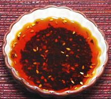

 |
Chili OilChina - Sichuan - Hong You | ||||
| Makes: Effort: Sched: DoAhead: |
12 oz * 1 day Best |
This is an important item in Sichuan cuisine. it is best made at home because purchased chili oil is usually too hot, and it lacks sediment, also used in recipes. With this recipe you can use enough for flavor before your recipe gets too hot. | |||
|
1 2 1/2 1/4 |
c oz t in |
Oil (1) Chili Flake (2) Sesame Seeds Ginger Root |
Make - (40 min - 10 min work)
|